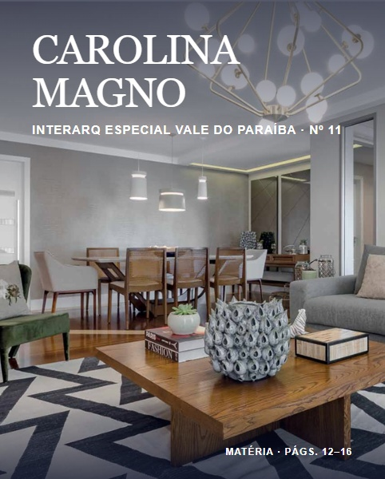

InterArq Especial Vale do Paraíba · Ed. 11
Reforma e integração
Carolina Magno apresenta a reforma de um apartamento, com home theater integrado ao estar, cozinha reorganizada e recuperação do piso de madeira. Matéria nas páginas 12–16.
Ler matéria